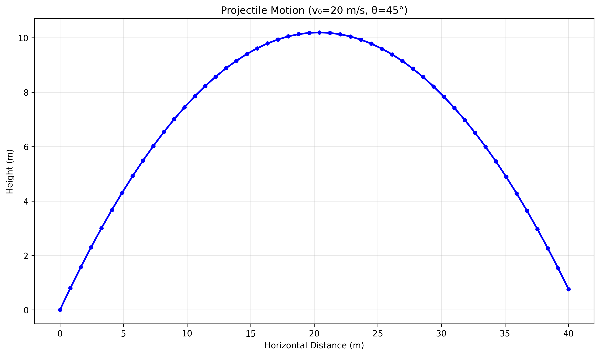
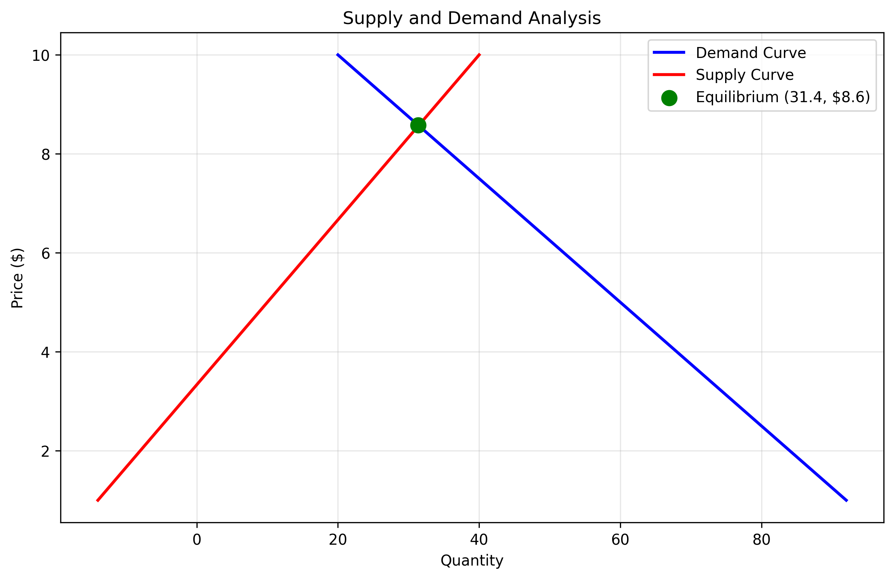
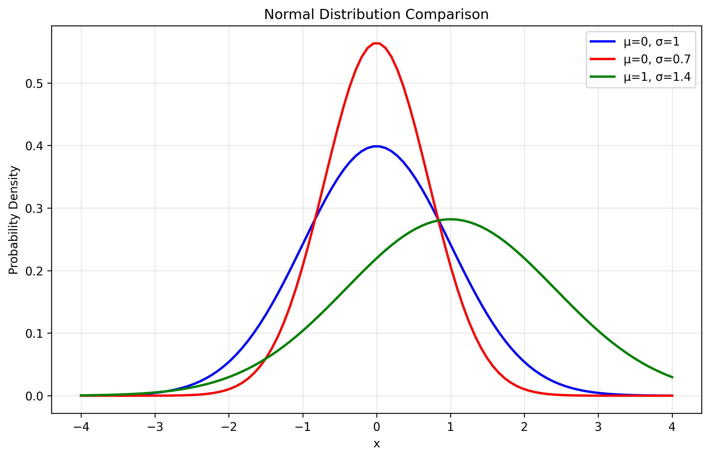
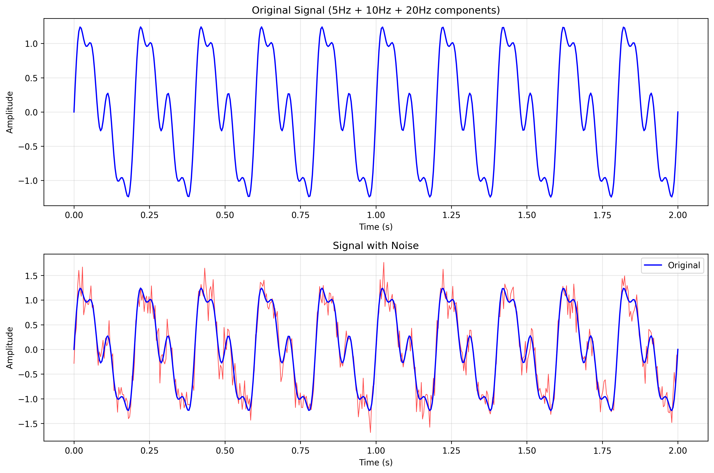
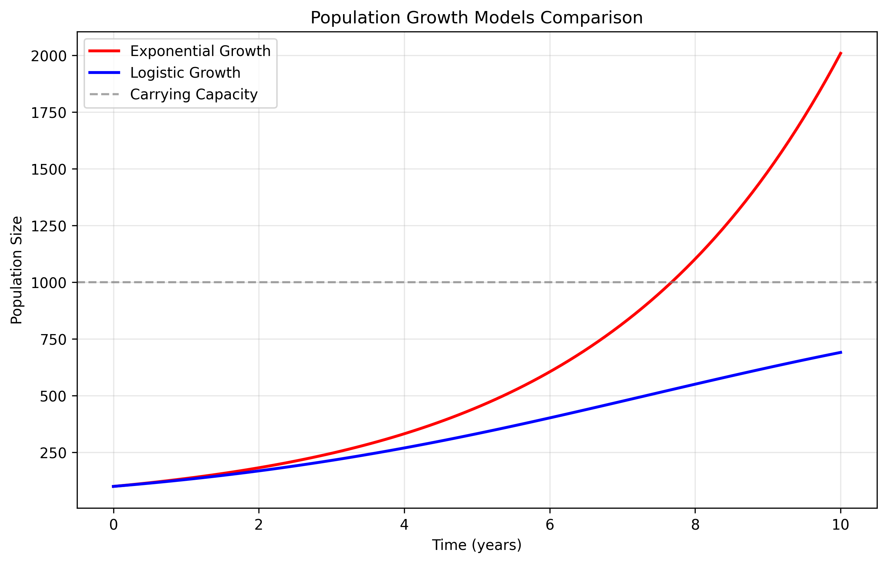
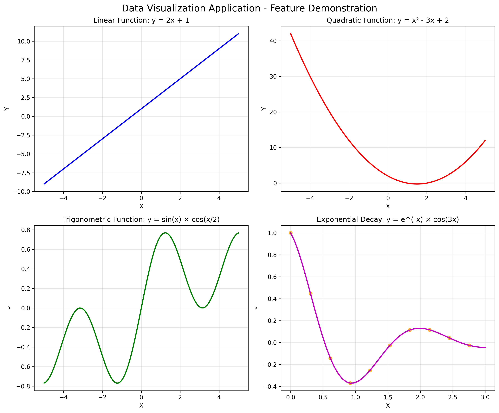

✨ Key Features
📊 Multiple Input Methods:
- Single Point Entry: Enter individual X,Y coordinate pairs
- Multiple Points: Comma-separated values for batch input
- Mathematical Functions: Generate points from predefined functions
📈 Visualization Types:
- Scatter Plots
- Line Plots
- Bar Charts
- Combined Scatter and Line Plots
🧮 Mathematical Functions Supported:
- Linear: y = mx + b
- Quadratic: y = ax² + bx + c
- Trigonometric: y = a×sin(bx + c)
- Exponential: y = a×e^(bx)
- Custom expressions using Python syntax
🚀 Quick Start
Installation:
pip install matplotlib numpy pandas
Run the application:
python3 data_visualizer.py
Example interaction:
Choose input method (1/2/3): 2
Enter X values: 1,2,3,4,5
Enter Y values: 2,4,6,8,10
Enter your choice (1-4): 1
🎨 Sample Visualizations
Here are examples of visualizations created by the application across different mathematical and scientific domains:
📐 Physics: Projectile Motion

Trajectory analysis with v₀=20 m/s at 45° angle
💰 Economics: Supply & Demand

Market equilibrium analysis with intersection point
📊 Statistics: Normal Distribution

Comparison of different normal distributions
⚡ Engineering: Signal Processing

Signal analysis with noise comparison
🧬 Biology: Population Growth

Exponential vs logistic growth models
📈 Feature Demonstration

Multi-panel showcase of various mathematical functions
🔧 Technical Details
Built with: Python 3.12, Matplotlib, NumPy, Pandas
Features: Interactive CLI, data validation, statistical analysis, high-resolution exports
Supported formats: PNG output with customizable DPI
📋 Additional Capabilities:
- Real-time data statistics (mean, range, correlation)
- Input validation and error handling
- Professional plot styling with grid lines
- Data point annotations for small datasets
- Interactive plot saving options
- Support for mathematical expressions
📁 Repository Structure
data_visualizer.py # Main interactive application
test_visualizer.py # Comprehensive test suite
demo_examples.py # Scientific application examples
manual_demo.py # Manual demonstration script
README.md # Detailed documentation
*.png files # Generated visualization examples
🎯 Mission Accomplished
✅ Problem Statement Solved: Created a Python data visualization application that:
- ✅ Asks user for two inputs (X and Y)
- ✅ Plots the data into various types of graphs
- ✅ Provides an intuitive, interactive interface
- ✅ Supports mathematical functions and real-world applications
- ✅ Includes comprehensive documentation and examples
Ready to use: Simply run python3 data_visualizer.py to start creating visualizations!